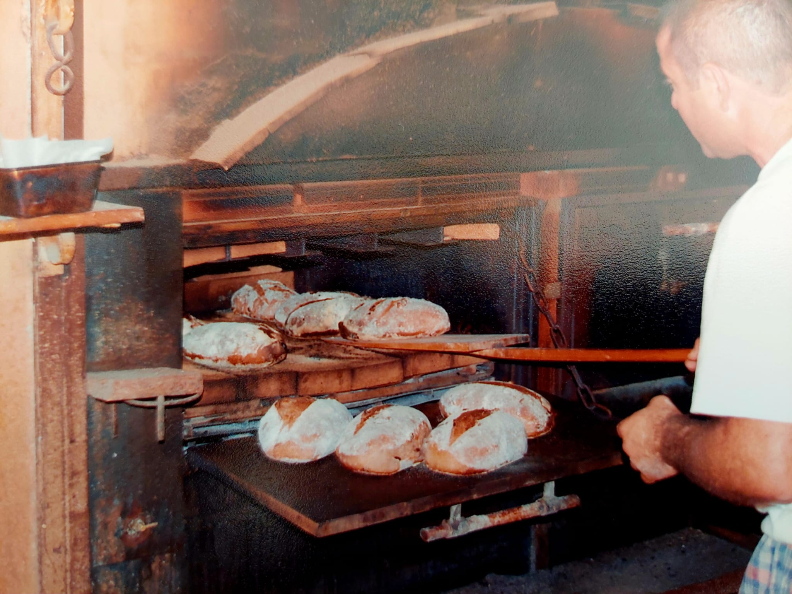

הסיפור שלנו מתחיל לפני שנים, כשהיינו זוג צעיר, חיפשנו את הדרך המשותפת שלנו לעבוד, ליצור ולבנות משהו יחד. אם הייתם מספרים לנו אז שנקים מאפיית בוטיק ללחמי מחמצת, כנראה שלא היינו מאמינים – התכנון המקורי שלנו בכלל היה ללכת לכיוון של קצביה! אבל מהר מאוד הבנו שזה לא בשבילנו, והלב משך אותנו למקום אחר, חם ומנחם בהרבה: עולם האפייה.
הניסיונות הראשונים שלנו התחילו ממש שם, במטבח הביתי הקטן. מתוך אהבה גדולה ותשוקה לבצקים, התחלנו לחקור ולשחק עם חומרי גלם, קמח ומים, עד שגילנו את הקסם של תסיסת המחמצת הטבעית.
את הלחמים הראשונים שיצאו מהתנור הביתי שלנו התחלנו למכור בשווקי איכרים מקומיים. בכל שבוע מחדש התרגשנו לראות את האנשים שמגיעים, טועמים, ומתאהבים בריח ובטעם האמיתי של לחם בעבודת יד.
אלו היו ימים משוגעים ומלאי עשייה. כדי להגשים את החזון ולהניע את העסק הצעיר, עפר עבד מסביב לשעון בשתי עבודות במקביל, אבל האהבה הגדולה ללחם ולמה שאנחנו בונים נתנה לנו את הכוח להמשיך. מאז ועד היום, אנחנו לא מאמינים בקיצורי דרך. המאפייה שלנו פועלת מאז שנת 1999 מתוך אותה מחויבות קפדנית לחומרי הגלם הטובים ביותר, אפייה סבלנית ומסורתית, והמון אהבה – כדי להביא אל שולחן האוכל שלכם את הטעם המשפחתי הטרי והאיכותי ביותר.